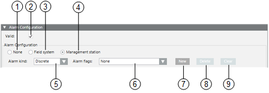
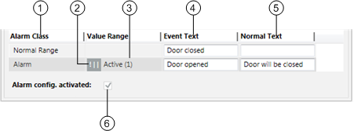
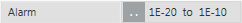
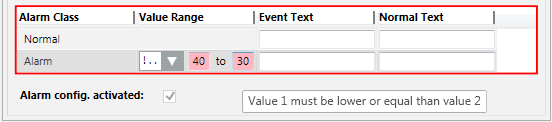

Alarm Configuration Expander
In the Models & Functions tab, the Alarm Configuration expander lets you create and configure alarms for the property currently selected in the Properties expander. Specifically, you can:
- Edit a field system alarm
- Create, edit, or delete a management platform alarm
For related procedures, see Configuring Alarms in Object Models.

Alarm Configuration Expander | ||
| Name | Description |
1 | None | Defines no alarm functionality for this data point property. |
2 | Valid | Displays, based on the color code, the source used for inheriting the information (see Presetting Behavior). |
3 | Field system | Defines the alarm configuration for the field system. |
4 | Management Station | Defines the alarm functionality on the management station. |
5 | Alarm kind |
|
6 | Alarm flags |
|
7 | New | Opens an input mask for defining the alarm condition in a row. Multiple alarm conditions can be defined. |
8 | Delete | Deletes the highlighted alarm condition. |
9 | Clear | Deletes all alarm conditions from the alarm table, (except the entries for Normal and Alarm). |
Entry Mask for Management Platform Alarm

| Name | Description |
1 | Alarm Class | Defines the alarm class to be enabled for an event. |
2 | Operand | Defines the condition (operand) for reporting the event. |
3 | Value Range | Defines the value at which an event is reported. |
4 | Event Text | Displays the alarm text for incoming event. |
5 | Normal Text | Displays the alarm text for outgoing event. |
6 | Alarm config. activated | When the check box is selected, the alarm is set to active. |
Supported Operands | ||
Operand | Meaning | Example |
| | | Or | |
!| | | Nor | |
.. | In the range of two values |  |
!.. | Not in the range of two values | |
> | Greater than |
|
< | Less than |
|
>= | Greater than or equal to |
|
<= | Less than or equal to |
|


Fault indication
- The first value must be less than the second value. A valid value must be less than or equal to 30.
- The value sequence is not ascending. A valid value must be less than 50.
